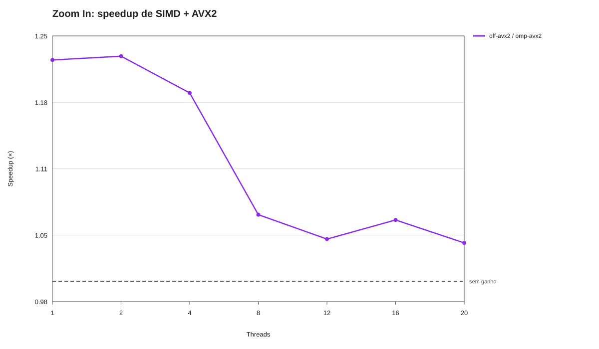
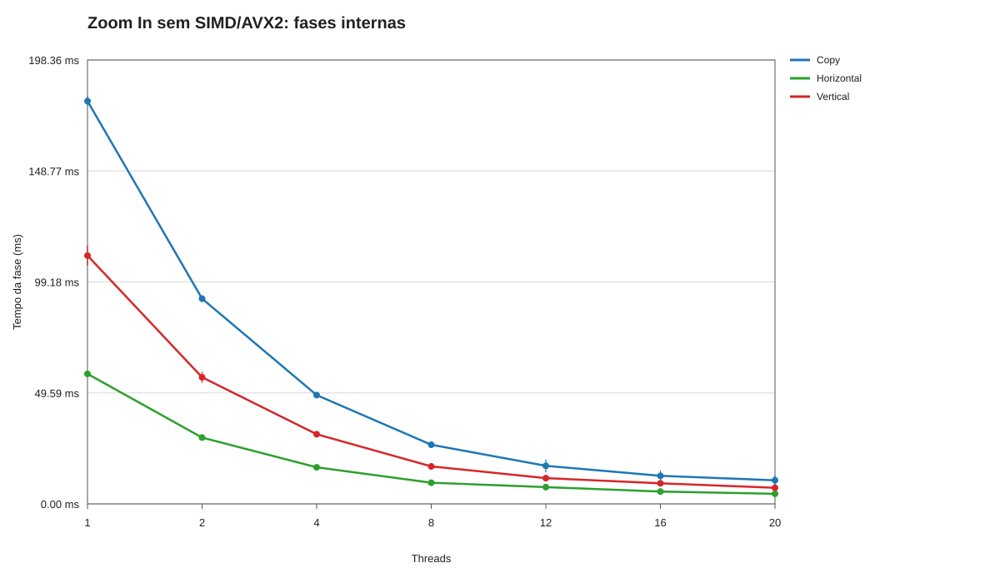
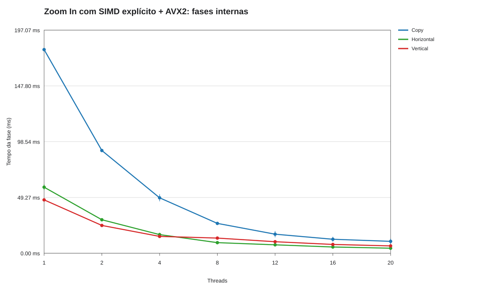
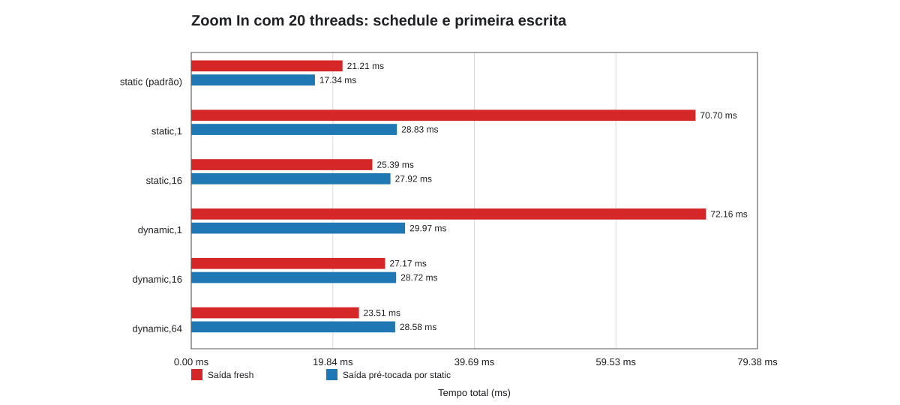
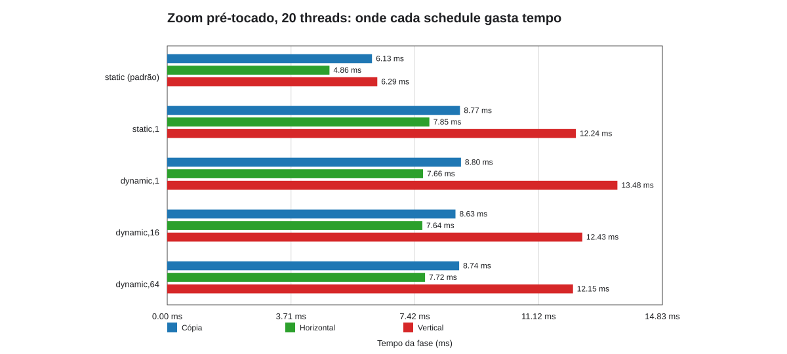
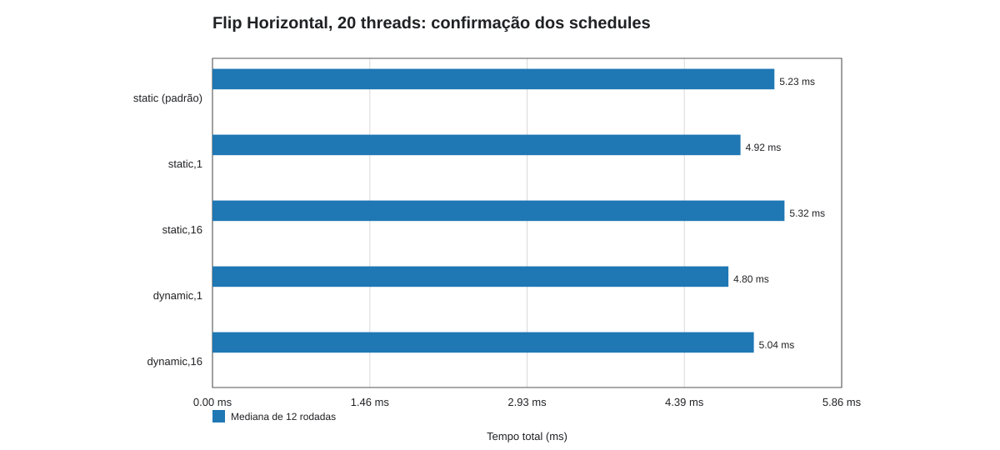

Zoom: tempo total por threads; barras mostram mínimo–máximo.
Fonte: resultados_pcad_hype_diagnostico_zoom_flip_compilador_823585. Os gráficos de tempo resumido usam medianas; o gráfico de razões pareadas preserva cada rodada individual. As barras verticais em gráficos de linhas representam o intervalo mínimo–máximo das 10 repetições do Zoom. O Flip foi executado em 12 rodadas pareadas e com ordem embaralhada; por isso, os gráficos de razão comparam cada schedule à execução static da mesma rodada.
No pré-toque, a saída é escrita antes da região medida: ele isola o efeito de primeira alocação/páginas de memória do custo dos kernels. Nas razões do Flip, valor acima de 1× significa que o schedule comparado foi mais rápido que static.
Zoom: tempo total por threads; barras mostram mínimo–máximo.

Zoom: speedup escalar de AVX2. A queda ao aumentar threads fica explícita.

Zoom: cópia, interpolação horizontal e interpolação vertical separadas.

Zoom: cópia, interpolação horizontal e interpolação vertical separadas.

Zoom, 20 threads: separar primeira escrita/páginas do custo do schedule.

Zoom pré-tocado: cópia e as duas fases de interpolação, por schedule.

Flip: medianas da campanha de confirmação; a tabela preserva mínimo, máximo e desvio.

Flip: cada ponto usa a mesma rodada; acima de 1× favorece o schedule indicado.

Flip: distribuição de linhas; revela o balanceamento real das iterações.

Flip: desequilíbrio temporal por thread, separado da simples contagem de linhas.
Os artefatos de assembly da coleta estão em resultados_pcad_hype_diagnostico_zoom_flip_compilador_823585/compiler/. Os relatórios de vetorização vazios são uma limitação daquele job e não evidência de ausência de vetorização.
{kind=link}
{kind=link}
{kind=link}
{kind=link}
{kind=link}
{kind=link}